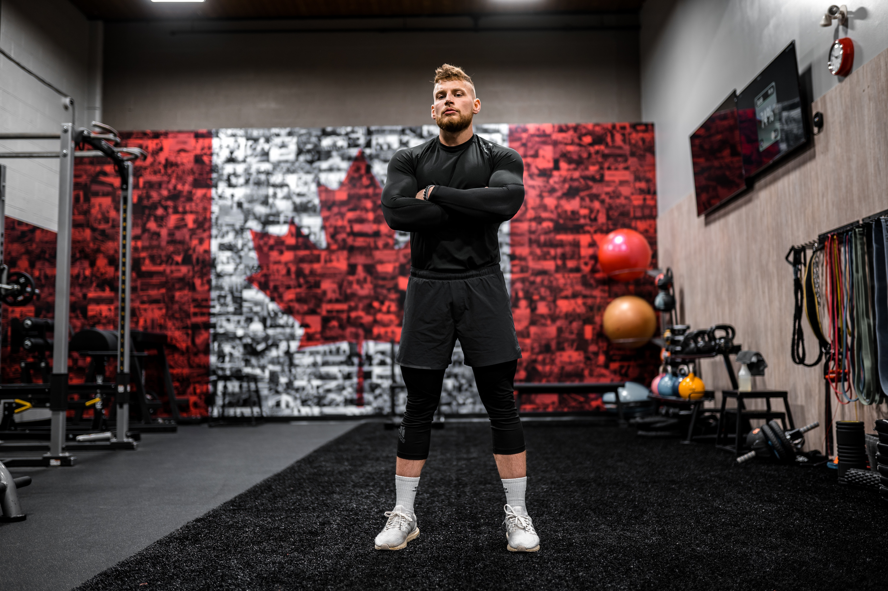

5 Simple Steps for Fitness Success!


Mouse over to see the steps!
Step #1
Step #2
Step #3
Step #4
Step #5
Click To View More Images

- Click To See Tip
- Hide Tip
- Toggle Tip
- Click To See A Fun Fact
Stretch. It makes you more flexible, relieves muscle tension, and improves posture.
Break up your workouts. If you dread a long workout, break it into small chunks. Five minutes here, 5 minutes there - it all adds up!
